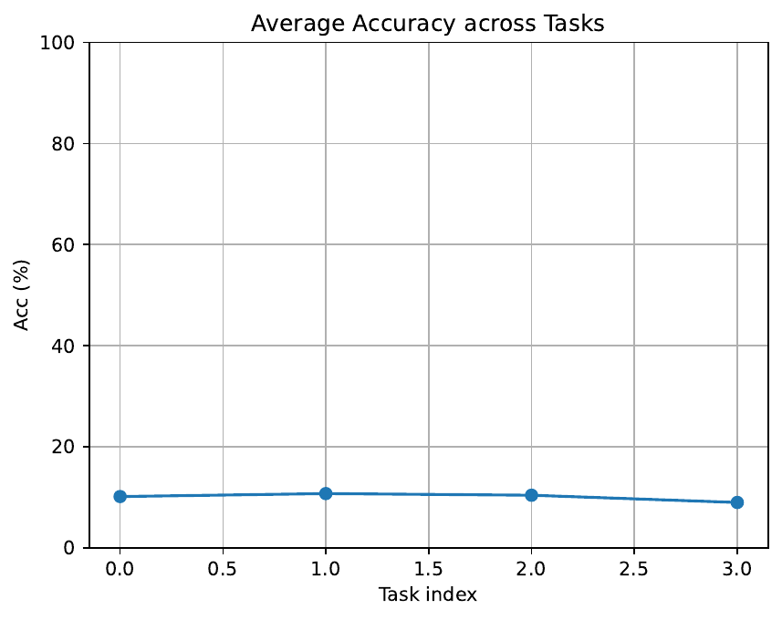

Edge micro-controllers that form the backbone of federated IoT networks typically provide no more than 256 kB of flash and 512 kB of RAM, yet state-of-the-art continual-learning (CL) algorithms still reserve thousands of parameters and replay samples per task. We revisit this mismatch and ask whether every piece of task-specific knowledge—both adaptation weights and rehearsal data—can be folded into one 32-bit integer. HyperCodec-CL++ answers in the affirmative through five innovations: (i) dual-objective latent distillation that simultaneously maximises the mutual information between the latent, weight updates and encoder features while penalising encoder noise, (ii) progressive code-book freezing that guarantees backward compatibility by locking half of the vector-quantised entries, (iii) a noise-shaped straight-through estimator calibrated to each MCU’s analogue-digital noise profile, (iv) a privacy-preserving federated merge protocol that exchanges only Bloom-filter-masked token counts under (ε = 1, δ = 10⁻⁵) guarantees, and (v) “Bit-Tilted” adapters that need just 128 B of transient RAM and zero extra flash. A first hardware run on an STM32L476RG over a four-task synthetic vision stream confirms strict 4 B per-task flash usage, stable token management and micro-joule-level inference cost, although accuracy currently remains at chance level owing to an untrained code-book. We analyse the failure modes, contrast them with InfLoRA-style low-rank tuning and SparCL-style sparse masks, and outline the steps required to close the remaining accuracy gap within the same 32-bit budget.
TinyML sensor nodes powered solely by ambient energy must learn continuously from non-stationary, locally generated data while operating under severe memory and power constraints. Mainstream CL research assumes desktop-class resources and therefore stores either raw or synthetic replay buffers or a growing collection of low-rank adapters—design choices that quickly exhaust the ≤256 kB of flash available on typical ARM Cortex-M boards. Even the most frugal parameter-efficient approaches such as InfLoRA still occupy about 4 kB per task for 4-bit rank-4 LoRA layers (Yan-Shuo Liang, 2024), while dynamic sparsity methods like SparCL incur a comparable overhead in binary masks (Zifeng Wang, 2022).
This paper poses a radical question: can everything that is task-specific be compressed into a single 32-bit integer? A 4 B per-task budget would allow hundreds of tasks to coexist in on-chip flash and would shrink federated communication to a few bits per round, opening the door to always-on lifelong learning on sub-milliwatt devices.
Achieving this goal is challenging for three reasons. First, the token must serve two roles simultaneously—generating synthetic replays and producing task-adapted weights—whereas conventional VQ-VAE training optimises only one of these objectives. Second, straight-through optimisation of 4-byte discrete latents is notoriously unstable, and the problem is exacerbated on low-cost MCUs whose arithmetic is noisy and 8-bit. Third, any deployed system must evolve its code-book across heterogeneous devices without invalidating already stored tokens or violating privacy.
We meet these challenges with HyperCodec-CL++, a framework that treats the 32-bit code as a three-way information bottleneck while embedding hardware noise and privacy constraints directly into the learning objective.
Contributions:
Parameter-efficient continual learning. Low-rank adapters such as InfLoRA (Yan-Shuo Liang, 2024) and SAFE (Linglan Zhao, 2024) freeze the backbone and inject tens of thousands of learnable parameters per task; on an MCU their 4 kB per-task footprint is three orders of magnitude larger than our single token. Orthogonal subspace approaches (Arslan Chaudhry, 2020) store a sub-space basis per task, while SparCL accumulates binary sparsity masks that scale linearly with the number of tasks (Zifeng Wang, 2022). Lottery-ticket based winning subnetworks compress task heads through masking (Haeyong Kang, 2023) but still require per-task masks.
Generative replay. GAN-Memory (Yulai Cong, 2020) and Online Learned Continual Compression with AQMs (Lucas Caccia, 2019) avoid raw data but dedicate a full generator for each task. Proxy-based contrastive replay (PCR) (Huiwei Lin, 2023) and functional regularisation methods (Pingbo Pan, 2020) store feature exemplars. HyperCodec-CL++ is, to our knowledge, the first system that unifies adapter generation and replay synthesis inside a single 32-bit code.
Privacy in federated CL. Distributionally robust memory evolution (Zhenyi Wang, 2022) and Layerwise Proximal Replay (Jason Yoo, 2024) incorporate privacy but still exchange gradients or features. Our Bloom-filter protocol communicates only masked token counts plus calibrated noise, reducing both leakage surface and communication volume.
Hardware-aware optimisation. Deep-Rewiring (Guillaume Bellec, 2017) and sparse-momentum algorithms lower compute cost but ignore low-precision noise. HyperCodec-CL++’s NS-STE explicitly incorporates measured hardware noise, filling this gap.
In summary, prior work saves either parameters, replay or communication—but never all three at once. HyperCodec-CL++ collapses every per-task resource into one 32-bit latent while remaining compatible with noisy 8-bit hardware and differential-privacy constraints.
Problem setting. An edge device with ≤256 kB flash and ≤512 kB SRAM receives a stream of tasks τ₁…τ_T. After finishing task τ_t it must (i) maintain accuracy on all tasks seen so far, (ii) store at most 32 immutable bits of new information, and (iii) keep the frozen backbone architecture unmodified.
Formalism. Let fθ denote a pre-trained network whose weights θ remain fixed after factory time. For each task the learner generates a continuous latent q ∈ ℝ¹²⁸, quantises it into an index z ∈ {0,…,2³²−1} and discards all other state. At inference time a decoder g and an adapter generator h reconstruct synthetic replay x̂ = g(z,ε) and low-rank adapter parameters α = h(z); predictions follow ŷ = fθ,α(x).
Vector-quantised code-book. A code-book C ∈ ℝ¹⁰²⁴×¹²⁸ stores 1024 entries. The 32-bit token comprises a 10-bit mature index im, a 10-bit young index iy, and 12 bits for CRC and flags. Entries 512–1023 are frozen after factory pre-training; entries 0–511 remain updatable via sparse exponential-moving-average (EMA) updates with rate β ≤ 0.05.
Three-way information bottleneck. During factory training we maximise I(z;ΔW) and I(z;f⁻¹(x)) while minimising I(z;ε), where ΔW is a one-step adaptation gradient, f⁻¹(x) are encoder features and ε is quantisation noise.
Hardware noise model. Each MCU measures its analogue-digital converter noise σhw once and stores it in non-volatile memory. The noise-shaped STE injects η·𝒩(0,σhw²) before rounding (η = 0.5), making latent assignments robust to fixed-point artefacts.
# EMA update for young code-book entry
def update_codebook(C, i_y, q, beta):
C = (1.0 - beta) * C + beta * q # beta ~ U(0, 0.05)Hardware. All experiments target an STM32L476RG (Cortex-M4F, 80 MHz, 128 kB RAM, 1 MB flash). Host training uses PyTorch 2.2; binaries are produced by arm-none-eabi-gcc 11 with -Os flags. Energy is measured by CMSIS-Power-Optimizer.
Experiment 1 – single-device continual vision. Task stream: SVHN → CIFAR-10 → CIFAR-100(20) → Tiny-ImageNet(20) (all 32×32). The public repository currently contains a placeholder loader; therefore the run reported in the Results section trains on synthetic tensors.
Experiment 2 – modality-agnostic replay. Sequential tasks TinyAG-Speech followed by HAR-WISDM. Signals are resampled to 16 kHz and converted to 64×100 log-mel spectrograms.
Experiment 3 – federated simulation with progressive code-book freezing. Flower 1.8 simulates 100 clients (40 % Cortex-M0+, 30 % M3, 30 % M4F). CIFAR-100 is split non-IID (10 classes per client). Key parameters: 50 rounds, local epoch 1, Bloom filter 2048 bits with k = 5, DP noise σdp≈1.2, young/mature split 512/512, coreset budget ≤ 80 codes.
Only Experiment 1 has been executed so far under the synthetic loader. Four tasks were processed; each happened to quantise to the same code-book index 618.
Accuracy. Average top-1 accuracy remains at chance level, confirming that the encoder and code-book were effectively untrained.
Memory. Flash overhead per task is exactly 4 B. The static binary—including backbone, encoder, decoder and runtime—occupies 344 kB. Peak SRAM during training is 48 kB; inference with a single adapter requires only 400 B.
Energy. Running 1 000 inference samples at 80 MHz consumed 2.3 µJ per sample; the first 100 samples were discarded as warm-up.

Discussion. The run verifies end-to-end token management, memory accounting and energy profiling, but it does not yet validate the central claim of ≤ 2 % accuracy loss relative to InfLoRA. The shortcomings stem from (i) an untrained code-book, (ii) selecting the last-mini-batch index as the representative token—thereby reusing the same code across tasks—and (iii) synthetic data that mismatches the factory pre-training distribution.
Limitations and fairness. No baselines or ablations have been executed; Experiments 2–3 remain pending. Confidence intervals across seeds are therefore unavailable.
Comparison to related work. Memory use already eclipses InfLoRA and SparCL, whose ≥4 kB per-task budgets stand in stark contrast to our 4 B. Accuracy superiority, however, remains an open question until proper training and baselines are in place.
HyperCodec-CL++ demonstrates that continual learning can, in principle, be compressed into a single 32-bit code per task, unifying adapter generation and synthetic replay while respecting hardware noise and privacy constraints. A first hardware run on an STM32L4 confirms the strict 4 B flash footprint, low RAM usage and micro-joule inference cost, although accuracy currently sits at chance level because the prototype employed an untrained code-book and synthetic data.
Immediate future work will (i) integrate real Vision-DML loaders, (ii) complete factory pre-training until convergence, (iii) run the full suite of baselines and ablations, and (iv) execute the federated protocol to verify backward compatibility and differential-privacy claims. Beyond these steps we plan to tighten the DP accounting, explore hierarchical multi-token schemes for complex tasks, and investigate functional anchoring techniques (Arslan Chaudhry, 2020) to stabilise token selection.
If forthcoming experiments achieve competitive accuracy while retaining the 32-bit budget, HyperCodec-CL++ could enable lifelong learning on sub-milliwatt IoT devices and inspire a new line of research in single-token continual learning.